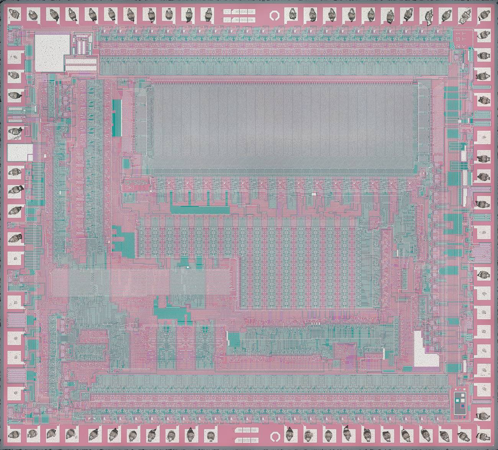
Indonesia
It starts here.
Our engineers write the logic and draw every layer of the chip. The design, and the IP, stay ours.
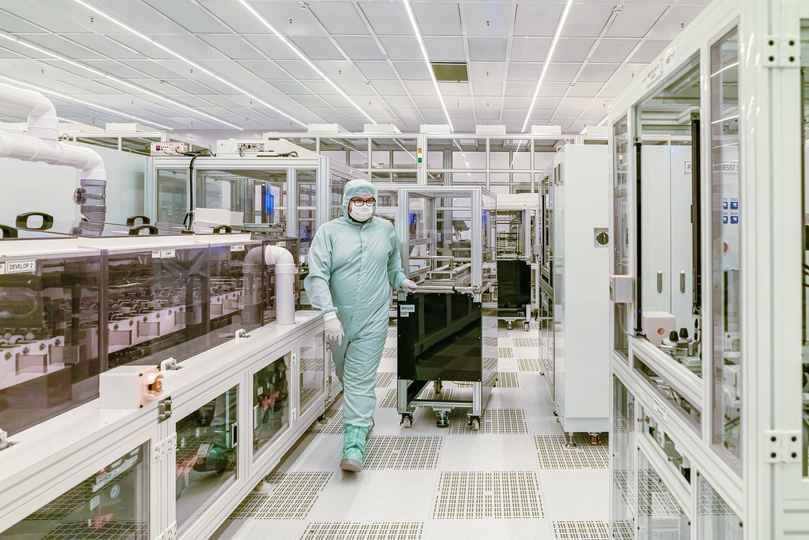
NODE designs energy-sector chips in Indonesia and fabricates them with foundry partners in Japan.
~100% of advanced ICs are imported. The 2021–23 shortage showed how fragile that is.
Since you opened this page, Indonesia has imported
worth of chips.
At 2025's pace of $4.87B a year.
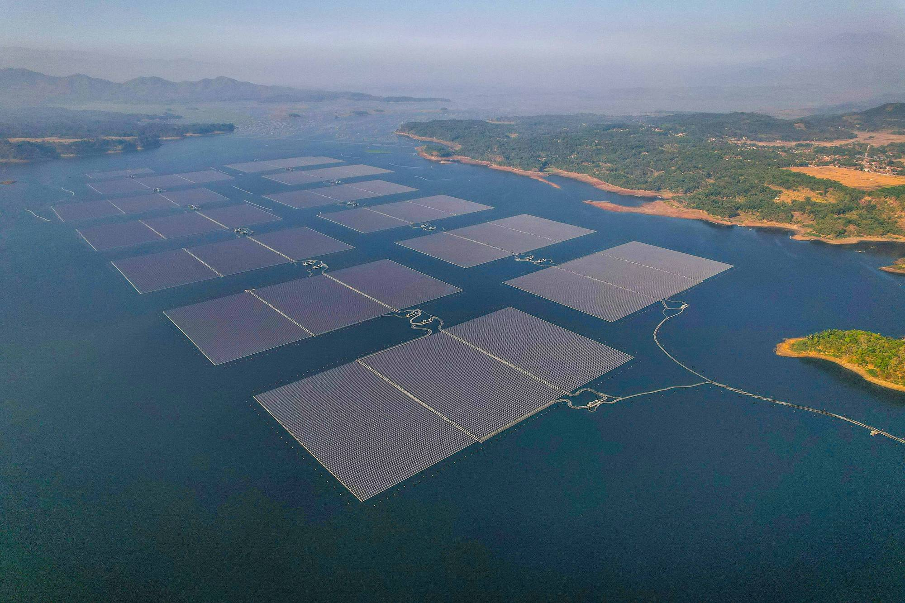
By 2030, Indonesia plans to build 600K electric cars a year, 9M electric motorbikes, 10M smart meters on PLN's grid, and 44% of its power from renewables.
Government and PLN targets for 2030. Every one needs power ICs and sensors.
Same silicon, a sliver of the capital. The talent and the IP stay in Indonesia.
Bars drawn to scale.

Indonesia
Our engineers write the logic and draw every layer of the chip. The design, and the IP, stay ours.
5,105 km north. The design travels as a file.
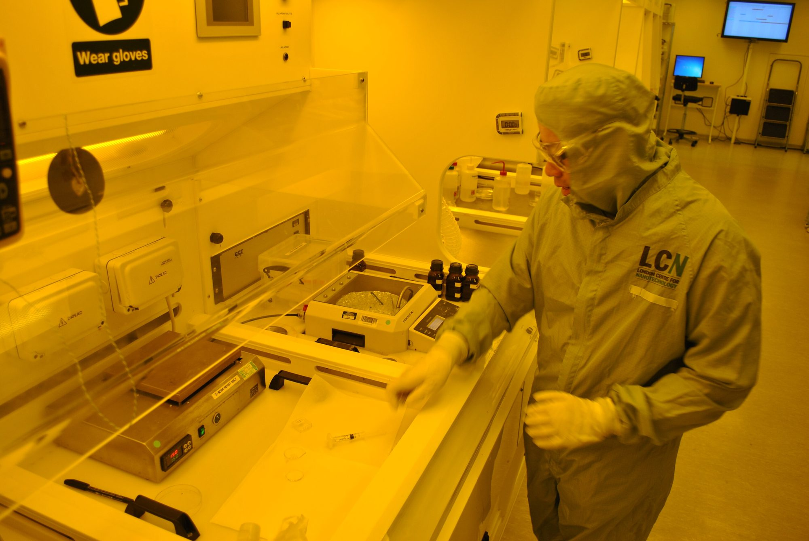
Kyushu33°14′N 131°36′E
Foundry partners in one of Japan's chip hubs turn our layout into silicon, then package and test every chip.
5,105 km back. This time, as chips.
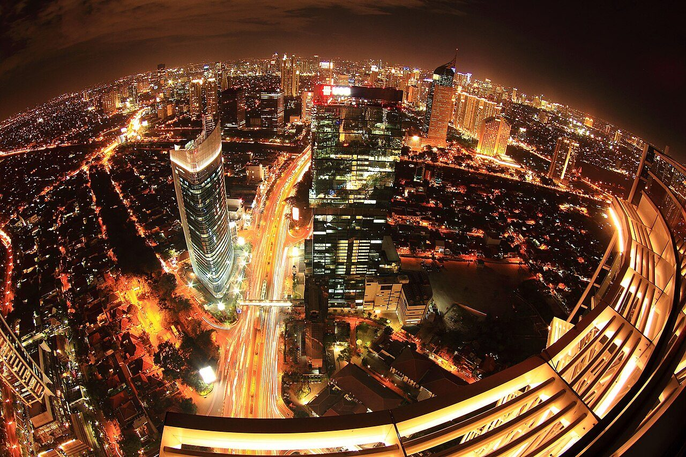
Indonesia
Chips go to Indonesian manufacturers. Or we license the design and earn on every unit.
Sensors that catch wear on rigs and pipelines early.
Chips that read temperature and pressure in real time.
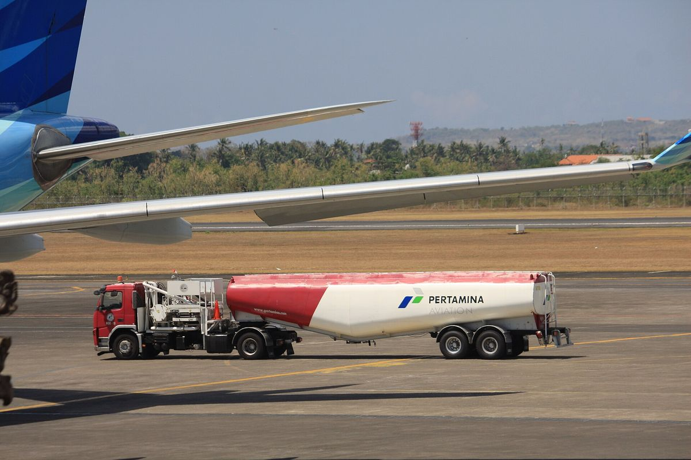
Fuel level and flow, tracked across tanks, trucks and ships.
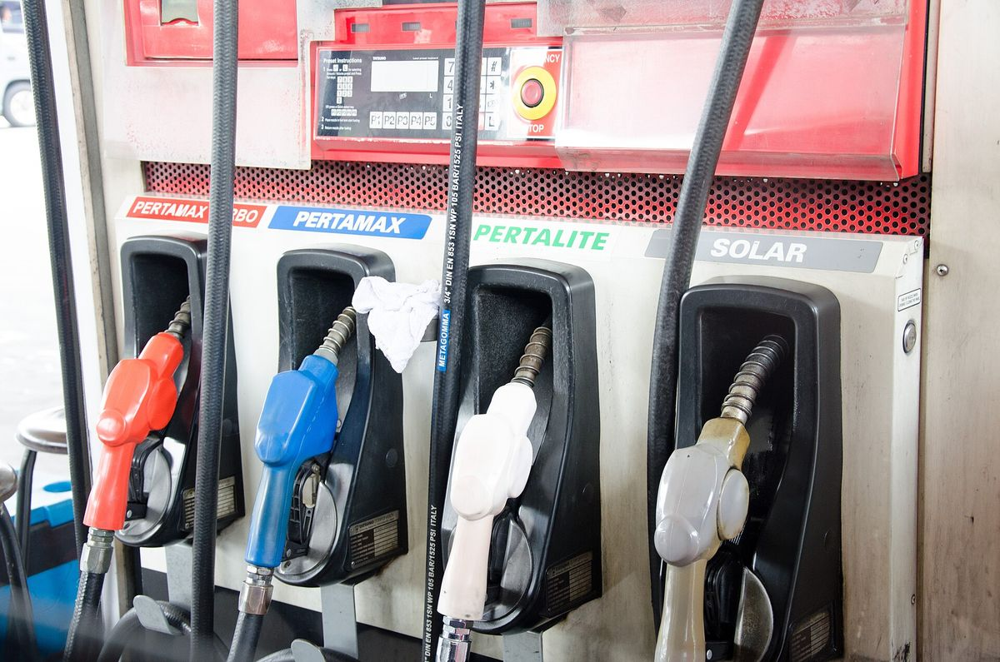
Automatic tank gauging and early leak alerts.
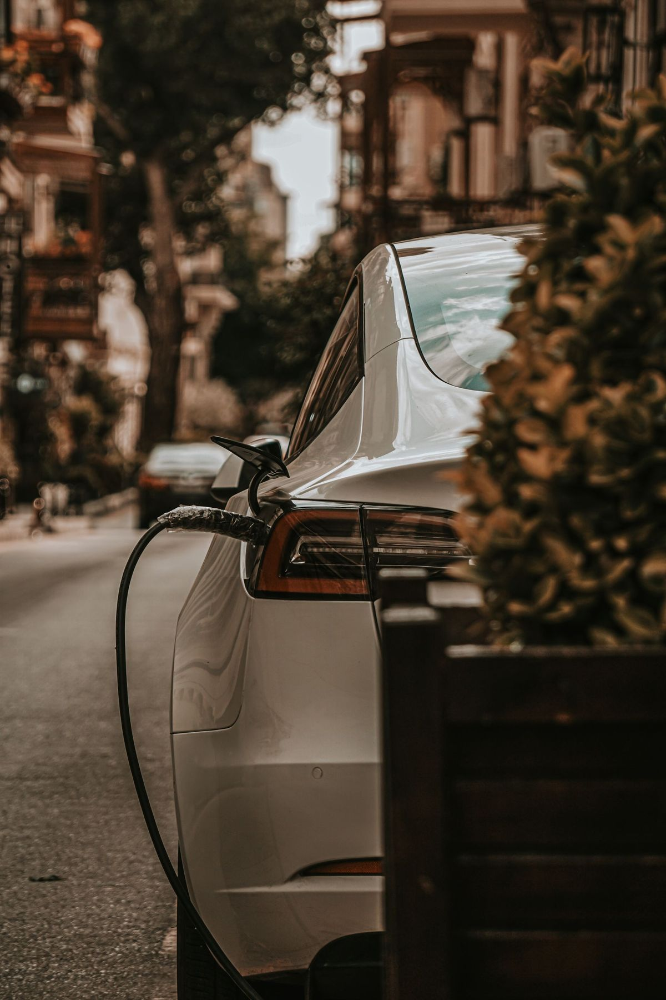
Power chips for chargers and battery systems.
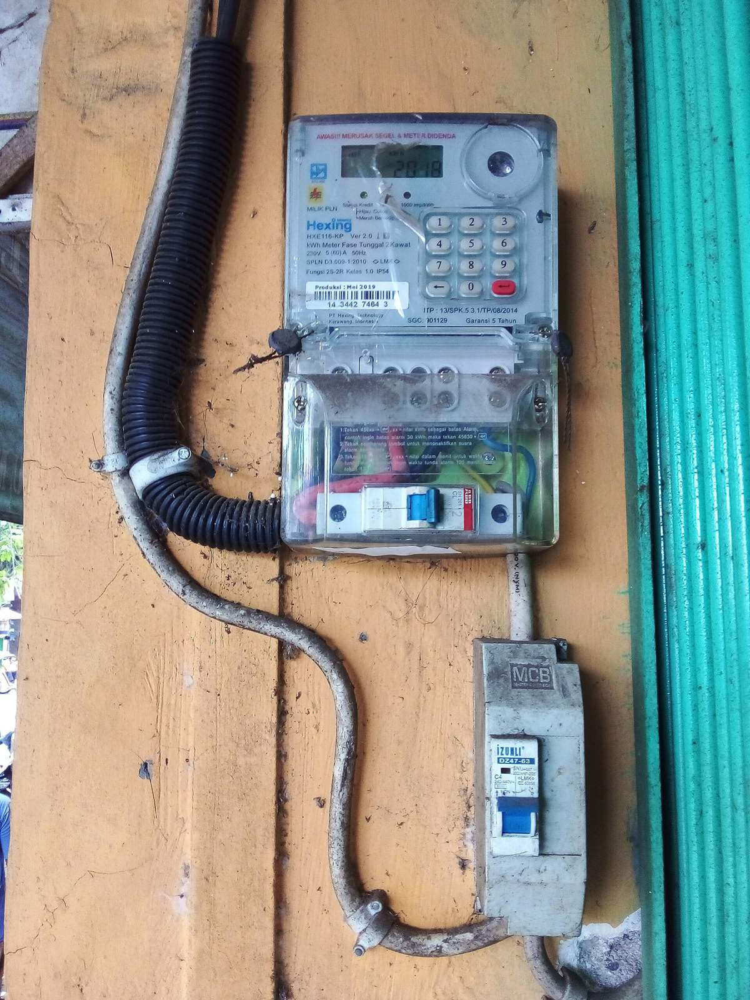
Smart meters, plus monitoring for geothermal and solar.
Field research on the factory floor, not from a desk. Three of the companies we've met:
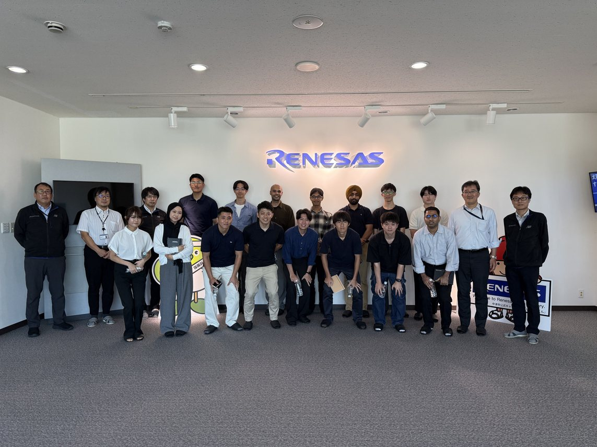
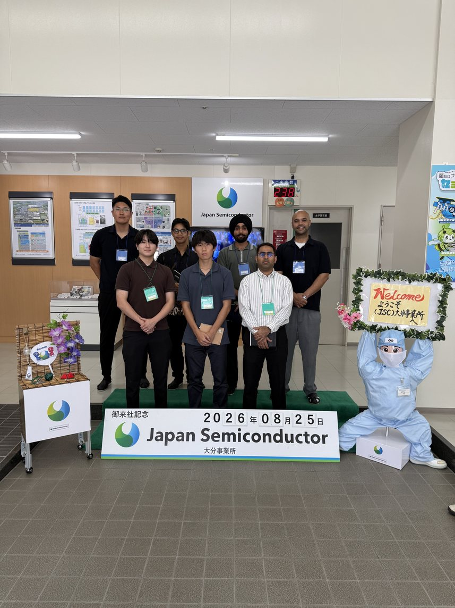
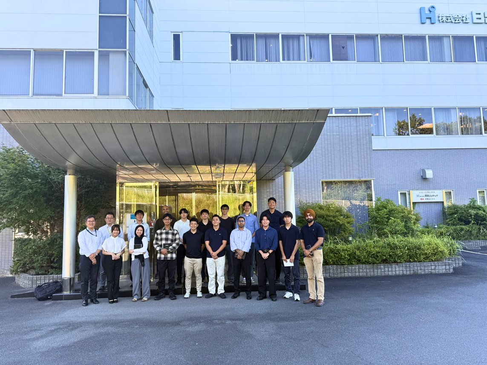
Lock the chip spec with industry.
Sign a foundry partner. Tape-out ready.
First silicon, first energy-sector pilot.
Three product lines and a regional hub.
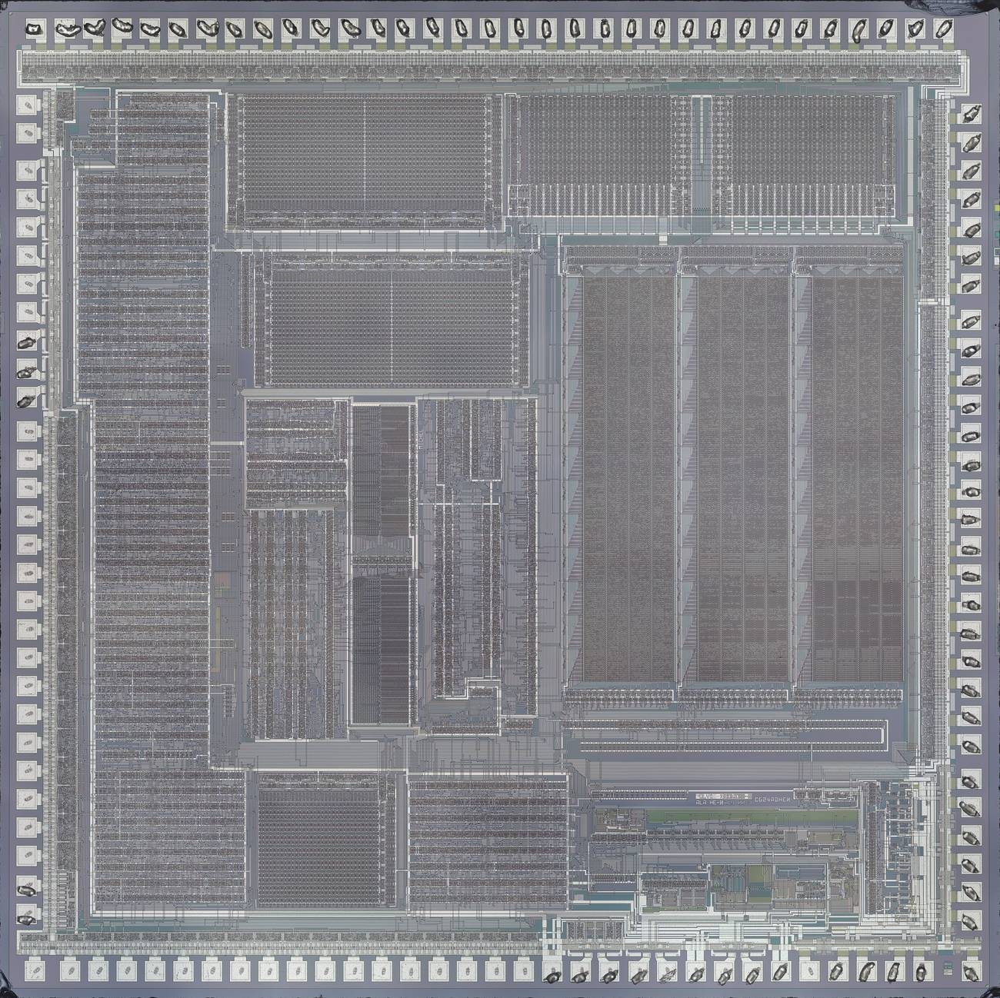
The value is in the design. We're claiming it for Indonesia. Energy first, then the region.
We pitched one idea: Indonesia should design its own chips.
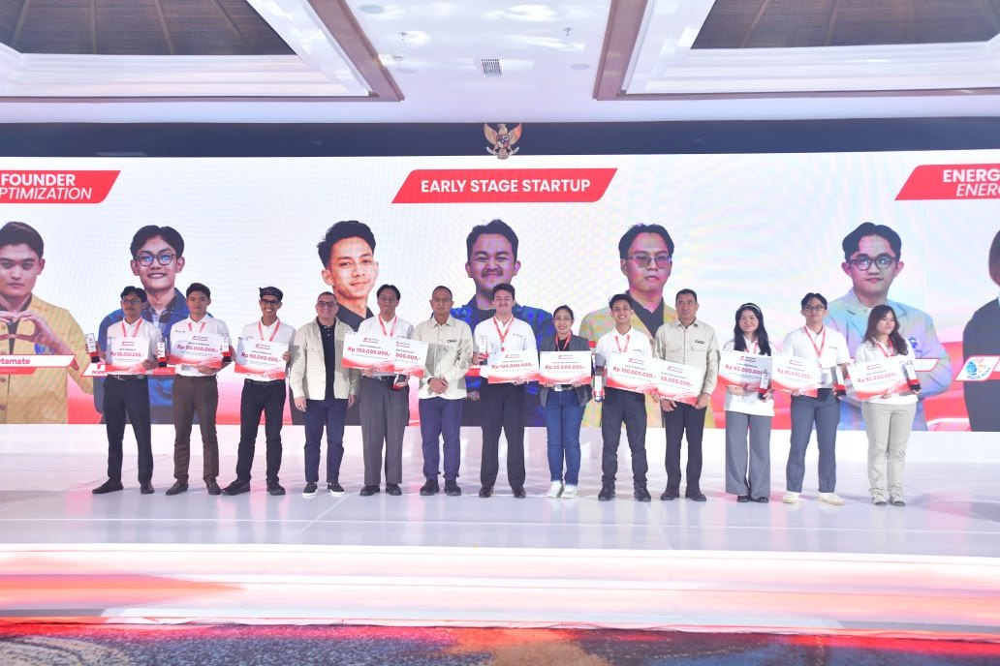
Energy Founder · Energy Optimization, Pertamuda 2026
applicants from 766 universities
Japanese chipmakers met in person, from IP to final testing